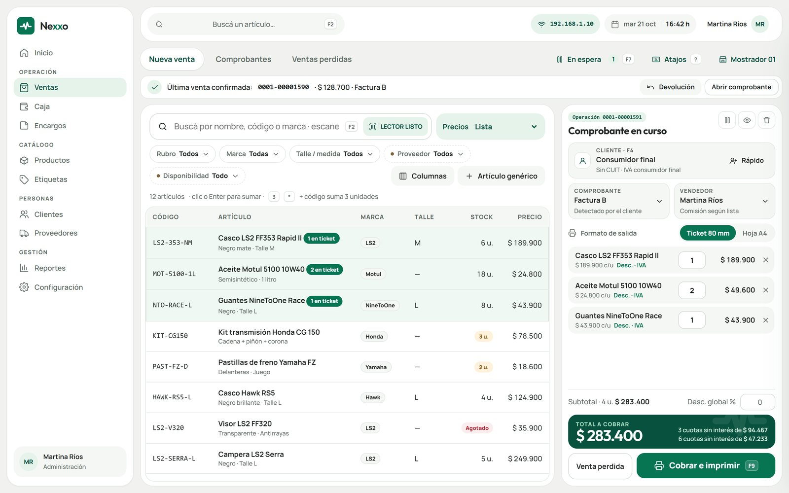
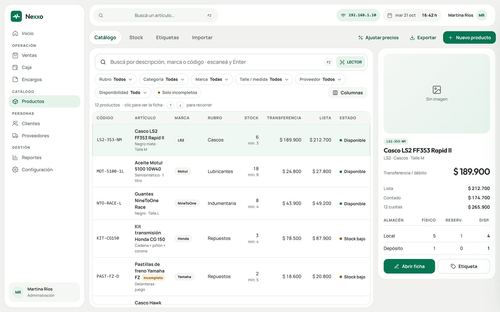
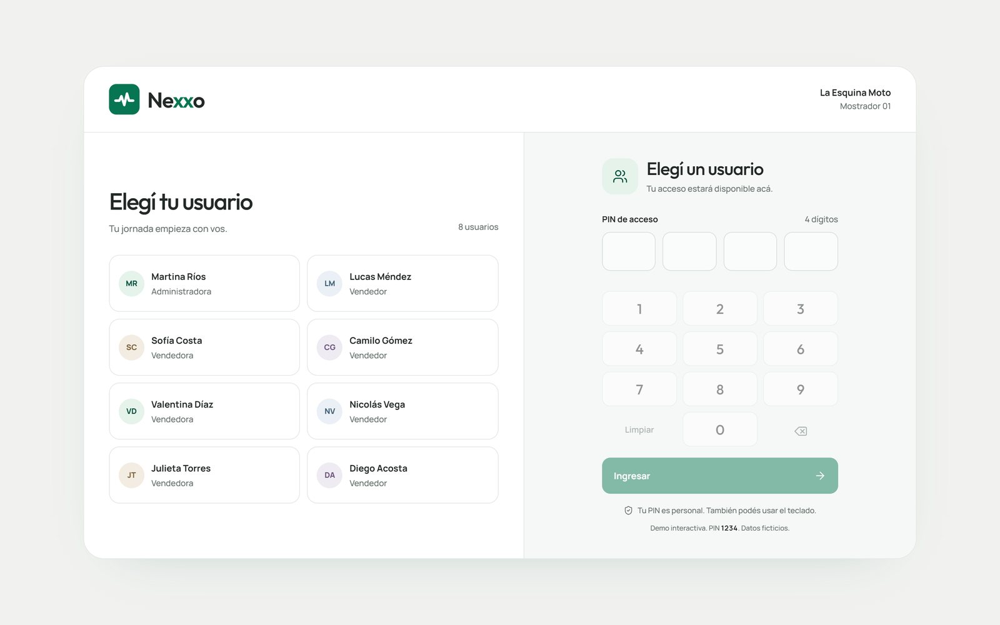

Ventas y caja
Venta con lector de códigos y atajos de teclado, ticket o factura, devoluciones y cierre de caja con el detalle de cada medio de pago.
 Nicolas Sgandurra
Nicolas Sgandurra
Software y automatización
Ventas, stock, caja y encargos de un comercio, en un mismo programa.

Nexxo es un sistema de gestión que hice a medida para un local de motos y repuestos. Antes de programar, relevé con el cliente cómo se vende en el mostrador, cómo se cobra y cómo llegan las listas de precios de los proveedores. Hoy funciona en el local en paralelo con el sistema anterior, mientras se completa el cambio.
Un comercio de motos, cascos, indumentaria y repuestos trabajaba con un sistema que no se adaptaba a su mostrador. Había que reemplazarlo sin frenar las ventas del día.
Venta con lector de códigos y atajos de teclado, ticket o factura, devoluciones y cierre de caja con el detalle de cada medio de pago.
Cada artículo tiene precios de lista, contado y cuotas, y stock separado por local y depósito. El sistema avisa cuando algo baja del mínimo.
Importa las listas de precios que mandan los proveedores y actualiza el catálogo sin cargar artículo por artículo.
Registra lo que encarga cada cliente, la seña y el estado del pedido.
Imprime etiquetas con código de barras para la mercadería nueva o con precio cambiado.
Cada persona entra con su PIN y sus permisos. Los reportes resumen las ventas y la asistencia del equipo.

El buscador acepta nombre, código o lector. El comprobante en curso queda a la derecha, con el total y las cuotas.

Filtros por rubro, marca, talle y proveedor, con la ficha del artículo al costado.

Cada persona elige su usuario y entra con un PIN de cuatro dígitos.
Charlas con el dueño y los vendedores sobre el mostrador, el stock, la caja y las listas de proveedores.
Una identidad propia, con nombre, símbolo y colores, y pantallas pensadas para trabajar con teclado y lector.
Servidor en Python con FastAPI y base de datos PostgreSQL. La aplicación de escritorio está hecha en React y TypeScript.
Convive con el sistema anterior, del que trae el historial, hasta que el cambio esté completo.
Las capturas usan datos de ejemplo y el código es privado. Si querés ver el sistema funcionando, escribime y coordinamos una demostración.